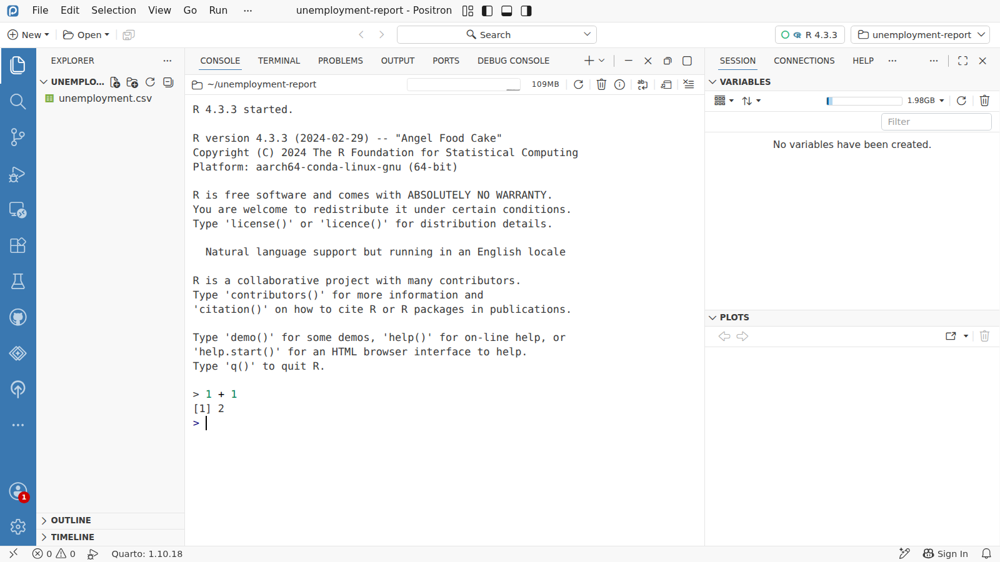
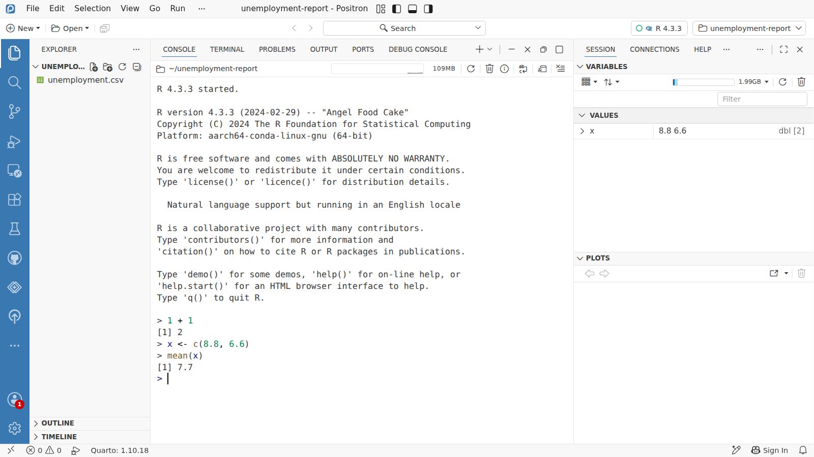

Day 1 · Writing code
Talking to R in the Console


x
1
Click in the Console, type
1 + 1 and press Enter. R works it out and answers on the next line: [1] 2.2
x <- c(8.8, 6.6) stores two numbers under the name x: the Kingdom's rate in 2022 Q1 and in 2025 Q4. <- means store.3
x now appears in Variables, with the values it holds. Objects stay until you close R.4
A function does work on what you give it:
mean(x) is 7.7. Most of R is calling functions like this one.